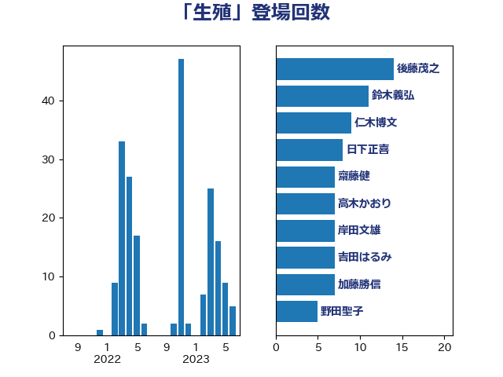

単語「生殖」

| 後藤茂之 | 自由民主党 | 14 回 |
| 鈴木義弘 | 国民民主党 | 11 回 |
| 仁木博文 | 無所属 | 9 回 |
| 日下正喜 | 公明党 | 8 回 |
| 齋藤健 | 自由民主党 | 7 回 |
| 高木かおり | 日本維新の会 | 7 回 |
| 岸田文雄 | 自由民主党 | 7 回 |
| 吉田はるみ | 立憲民主党 | 7 回 |
| 加藤勝信 | 自由民主党 | 7 回 |
| 野田聖子 | 自由民主党 | 5 回 |
| 小山展弘 | 立憲民主党 | 5 回 |
| 天畠大輔 | れいわ新選組 | 5 回 |
| 葉梨康弘 | 自由民主党 | 4 回 |
| 自見はなこ | 自由民主党 | 4 回 |
| 高見康裕 | 自由民主党 | 3 回 |
| 芳賀道也 | 国民民主党 | 3 回 |
| 漆間譲司 | 日本維新の会 | 3 回 |
| 本村伸子 | 日本共産党 | 3 回 |
| 加田裕之 | 自由民主党 | 3 回 |
| 中島克仁 | 立憲民主党 | 3 回 |
| 鎌田さゆり | 立憲民主党 | 2 回 |
| 福島みずほ | 社会民主党 | 2 回 |
| 畦元将吾 | 自由民主党 | 2 回 |
| 末松信介 | 自由民主党 | 2 回 |
| 打越さく良 | 立憲民主党 | 2 回 |
| 岡本あき子 | 立憲民主党 | 2 回 |
| 山添拓 | 日本共産党 | 2 回 |
| 小倉將信 | 自由民主党 | 2 回 |
| 吉田久美子 | 公明党 | 2 回 |
| 仁比聡平 | 日本共産党 | 2 回 |
| 高橋千鶴子 | 日本共産党 | 1 回 |
| 音喜多駿 | 日本維新の会 | 1 回 |
| 石川大我 | 立憲民主党 | 1 回 |
| 石井苗子 | 日本維新の会 | 1 回 |
| 田畑裕明 | 自由民主党 | 1 回 |
| 田村貴昭 | 日本共産党 | 1 回 |
| 田村智子 | 日本共産党 | 1 回 |
| 永岡桂子 | 自由民主党 | 1 回 |
| 梅村聡 | 日本維新の会 | 1 回 |
| 梅村みずほ | 日本維新の会 | 1 回 |
| 山本太郎 | れいわ新選組 | 1 回 |
| 山下貴司 | 自由民主党 | 1 回 |
| 小池晃 | 日本共産党 | 1 回 |
| 大河原まさこ | 立憲民主党 | 1 回 |
| 塩村あやか | 立憲民主党 | 1 回 |
| 古川禎久 | 自由民主党 | 1 回 |
| 佐藤英道 | 公明党 | 1 回 |
| 伊藤孝恵 | 国民民主党 | 1 回 |